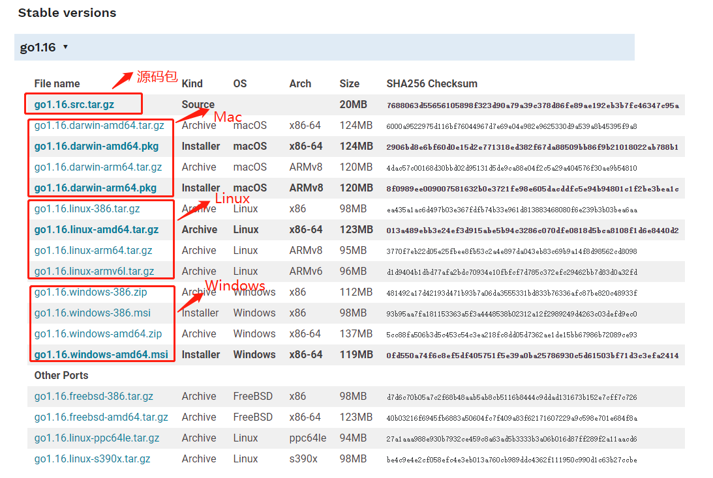

上一篇对 Go 语言进行了介绍，不知道你有没有想继续学下去的冲动呢?
在软件领域，当你学习一门新语言、新技术时，一般先从安装环境开始，实实在在的安装完，使用它，逐步深入了解。本文将从 Go 语言环境安装开始，带你一起开启 Go 语言的开发之路，其中包括环境安装、IDE使用等内容。
1、Go语言环境安装
1.1 开发包获取
Go 语言支持以下系统：
- Windows
- Linux
- Mac：也称为 Darwin
- FreeBSD
开发包下载地址为：https://golang.org/dl
如果打不开可以使用这个地址：https://golang.google.cn/dl
根据你的系统，选择下载对应的开发包。

以 Windows 系统为例，下载 Windows 的安装包 go1.16.windows-amd64.msi，下载地址：https://golang.google.cn/doc/install?download=go1.16.windows-amd64.msi
1.2 开发包安装
（1）安装开发包。
双击下载的安装包 go1.16.windows-amd64.msi，一步步安装即可。
默认情况下，会安装在 C:\Program Files\Go 目录下。（不同版本会存在差异，以实际为准！）
（2）配置 Go 环境变量。
默认情况下，安装完开发包会自动配置 Go 环境变量，如若未配置或配置不符合自己需求（GOPATH 可按照自己的实际情况配置），则安装下面的配置方法配置或进行调整。
根据 Windows 系统在查找可执行程序的原理，可以将 Go 所在路径定义到环境变量中，让系统帮我们去找到运行执行的程序，这样任何目录都可以执行go指令。配置的环境变量如下所示：
| 环境变量 | 说明 |
|---|---|
| Path | 添加Go开发包的 /bin 目录，如：C:\Program Files\Go\bin |
| GOPATH | 工作目录，设置 Go 项目的工作路径，可根据自我喜好设置。 |
右键“我的电脑”-> 属性 -> 高级系统设置 -> 高级 -> 系统变量：

添加的环境变量如下：
-
Path：
C:\Program Files\Go\bin
-
GOPATH：
E:\github\golangLearning，自定义目录，作为后续 Go 工程目录。
（3）环境检验。
打开 cmd 命令行，执行 go version，检查是否安装成功并生效。

2、IDE 安装
2.1 IDE 工具
常用的 Go 开发 IDE 如下所示：
- Visual Studio Code（简称 VSCode）
微软的产品，一个运行于 Mac OS、Windows 和 Linux 之上的工具，默认提供 Go 语言的语法高亮。安装 Go 语言插件，还可以支持智能提示，编译运行等功能。 - Sublime Text
可以免费试用，默认也支持 Go 代码语法高亮，只是保存次数达到一定数量后需要购买。 - Vim
它是从 vi（Linux）发展出来的一个文本编辑器，代码补全、编译及错误跳转等方便编程的功能非常丰富。 - Emacs
它不仅仅是一个编辑器，因为功能强大，可称为集成开发环境。 - Eclipse IDE 工具
开源免费，并提供 Go Eclipse 插件。 - LiteIDE
LiteIDE是一款专门为Go语言开发的跨平台轻量级集成开发环境（IDE），是国人开发的。 - JetBrains 公司的产品
GoLand、PhpStrom、WebStrom 和 PyCharm 等 IDE 工具，都需要安装 Go 插件。
Go 语言的 IDE 工具很多，可根据自我喜好自行选择，不做强制要求。
（建议大家先选择使用 VSCode，这样能让你更好地理解 Go 语言、基本语法和关键字等。等熟悉 Go 的语法后，再切换到自己顺手的IDE即可，如：IDEA、GoLand 等。）
2.2 安装 VSCode
这里以 VSCode 为例。
下载地址：https://code.visualstudio.com/

下载页面可以选择不同版本供大家下载。
我选择了 Windows x64 版本下载，并直接安装即可。
2.3 VSCode 配置 Go 语言插件
（1）首先安装 Go 语言插件：

（2）配置 Go 开发环境包
VSCode中，快捷键ctrl+shift+p打开，输入go:install：

并选中Go:Install/Update Tools回车，并全部勾选，确认：

Tools environment: GOPATH=E:\github\golangLearning
Installing 9 tools at E:\github\golangLearning\bin in module mode.
gopkgs
go-outline
gotests
gomodifytags
impl
goplay
dlv
golint
gopls
省略……
Installing github.com/uudashr/gopkgs/v2/cmd/gopkgs (E:\github\golangLearning\bin\gopkgs.exe) SUCCEEDED
Installing github.com/ramya-rao-a/go-outline (E:\github\golangLearning\bin\go-outline.exe) SUCCEEDED
省略……
All tools successfully installed. You are ready to Go :).
2.4 Go语言程序快速运行
（1）VSCode 打开刚刚创建的 GOPATH 工程目录。
（2）创建一个新的文件 test.go，编写 Hello, World! Go 程序，代码如下：
package main
import "fmt"
func main() {
fmt.Println("Hello, World!")
}
保存文件后，VSCode 会自动检测到可能需要安装的扩展包或插件，此时我们会看到右下角有弹框提示，如下所示。此时我们暂时忽略，无需安装。

（3）快速运行。
VSCode 中“Terminal” -> New Terminal，执行 go run test.go 命令直接运行 test.go 程序，结果如下：
（实际环境是需要先编译(go build)后运行。go run 命令的执行时间较长，是因为其中包含编译过程。）

到此，Go语言开发环境搭建完毕！